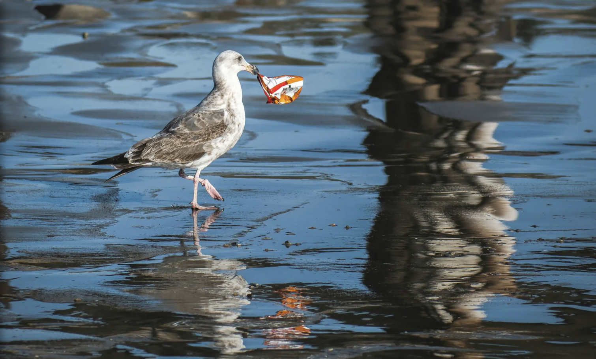
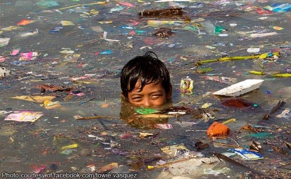

Effects of Water Polution on Sea Animals
Polluted water often contains plastic, chemicals, and oil that damage marine life. Many sea animals mistake plastic for food, which can block their stomachs and cause them to die. Chemicals and toxic waste can poison fish and other organisms, making them sick or unable to reproduce.
Oil spills can coat animals' bodies, making it hard for them to swim, breathe, or stay warm. Pollution also destroys coral reefs and habitats, forcing animals to lose their homes and food sources.

Effects of Water Pollution on Land Animals
Water pollution can harm land animals when they drink contaminated water or eat polluted food.
Chemicals, plastic, and toxic waste can make animals sick and damage their health. Polluted water can also destroy habitats and reduce clean water sources, making it harder for animals to survive.

Effects of Water Pollution on Humans
Water pollution can harm human health in many ways. Drinking contaminated water can cause diseases such as diarrhea, cholera, and typhoid.
It can also lead to skin problems and long-term health issues. Polluted water affects food when fish and crops become contaminated. In addition, it reduces access to safe drinking water, making daily life harder for many people.